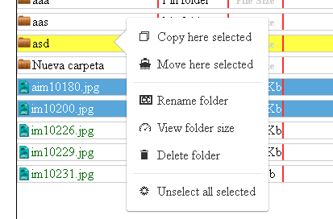
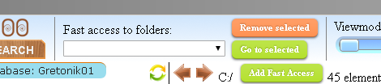
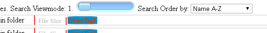

When application start you must choose or create a new database.
If is not the first time you launch the program, last used database is automatically choosed and you can change it by selecting another already created database from ‘change database’ selection list, or alternatively introduce a new name in the input field near to ‘New database’ button and push it or press enter.
If is the first time you launch the program you must enter a new name in the mentioned input field.
Note (for previous users of Tagstoo 1.4 and earlier versions): From version 1.5 of Tagstoo onwards, new database list load method is used, because of an external imperative. The previous databases will not appear in the list, but don´t worry, to access data simply execute the previous version of Tagstoo that you have (Here you can donwload version 1.4) export the data of the database of your choice to a file and close program, launch the new Tagstoo version and import the data into a new database.
Each database is associated to a drive unit like ‘C:’, ‘D:’, ’G:’, etc.. (in Windows) or ‘/’, ‘/media/user/externaldrive’, etc.. (in Linux), or ‘/Volumes/yourdrive’ (in macOS) but this associated drive can be changed at any time in the options of the program, this is so that if you have the data to be tagged on an external drive everything works correctly even though the system has been able to choose another path to the drive than you used last time, or you change operating system.
So select a drive unit if you need (by default is selected that from which the program is executed) and press ‘Launch!’ button to start.
Another buttons in the Initial options is ‘Import data’ that by clicking on that you can choose a file where a database has been previously exported and import that in the database you choose. And delete, to delete database that you select.
An switch to change between color and 'grayscale' modes is also available in this initial options window.
More info on import/export and databases on the help about general options.
After execute the program and press ‘Launch!’ on the Initial database options, the program general interface is launched.
There are two main windows in the program; the explorer, that is launched at the beginning, and the searcher, you can go alternatively from one to another by selecting the corresponding tab below ‘tagstoo’ logotype.
To access a folder press and hold mouse button in a folder (both in the left panel treeview or in the folders accessible in the right panel at each moment).
To open tree structure of a concrete folder in the left panel treeview simply click (without press and hold) in the folder you want.
To launch a file, that can be an executable or any kind of file, press and hold over the file you want, if is an executable it will execute it, if is any other kind, for example a video or a text file it will launch the viewer that is configured in the system as default viewer for that type of file.
An extra option is available to images, so apart of system image viewer that is launched if you press and hold over the name or any other space of the element except the image itself, if you click on the image, an internal Tagstoo image viewer will be launched.
There are various viewing modes, the first ‘1’ (that is initial viewmode when program start) show folder and files in a list each one in a row that have various columns; first, icon (or mini-preview image) and name, second, extension of files or number or elements that contains each folder, third, size of files, fourth, tags of element, fifth, last modified date of the element, and sixth, the length in case the file is a media (audio or video file).
The other viewing modes, ‘2’ to ‘9’, present element as cards of different sizes from smallest ‘2’ to more bigger ones ‘9’.
Any of the selected viewmode can show elements ordered in the mode that can be choosed in the ‘Order by:’ selector on the top, by default elements are ordered initially by name in ascendant order (A-Z), other order options are; by name descendant (Z-A), by extension (A-Z) and (Z-A), Size from small to big and from big to small, and last modified from newest to oldest and from oldest to newest.
This is used to apply, after, some file system action (that is, copy, move or delete) to elements you choose. In the right panel use mouse so select various elements, or you can also select one by one or use shift key to select all elements between two clicks, and combine selections to easily choose what you want.
There are two ways to copy and move selected elements, in both you must be taken in consideration which option is selected in the ‘COPY/CUT’ switch on the top.
The first way is to drag and drop elements from right side to a folder in the left side, it will copy or move files depending of the option selected on the switch on the top.
Another way to copy or move is to select a folder in the left side, by double clicking in it, and then press ‘PASTE’ button on the top. It will move or copy selected elements in the right, depending the option selected on the switch of the top.
Simply choose the elements you want to delete in the right panel and press ‘DELETE’ button in the top, be careful, there is no undo action for delete file/folders (for security there is a confirmation question when this button is pressed).
To rename a file or folder double click on the selected element’s name and write the new one.
There is undo for the majority of the possible actions over elements, except for delete folders or files, that is; move or copy files and folders, rename file or folder, add tag to a file, to a folder, or to a folder and its sub-elements, and delete a tag from element.
To undo the undesired action simply click on ‘UNDO’ button on the top.
In each database apart from information about tags also are saved Fast access folders routes.
You can add a folder to this list by entering in the desired folder and clicking on ‘Add Fast Access’, so now from whatever you are if you select the folder from the list and click on ‘Go to selected’ the folder will be opened in the explorer.
Also you can delete selected folder from the list by clicking in ‘Remove selected’.
There are a pair of refresh buttons, one for the treeview on the left and another to the directory view on the right, that they will refresh the content of their respective ambits.
This comes in handy if for some reason the information is not correctly visualized or if is not actualized (for example if you do a change in the filesystem with a program outside to Tagstoo, and the affected folder is open.)
Tags are managed in the bottom side of the program, and to add tag to an element simply choose one tag and drag and drop it over the element you desired.
The tags positions are interchangeable, both in the tag selector below and in each element tags lists.
To create a new tag click on the button ‘Add New Tag’ . A new window will appear with three options you can manage; the shape of the tag (choosing one of them), the color (by clicking in the circle), and the text (introducing it in the input field). You can preview result in the preview box.
Press ‘Create Tag!’ if you are satisfied with the outcome.
Here you must first select the tag you want to edit, or remove, from the previously created tag list.
If you want to edit the tag, the same options of create a new tag are available but in this case it will apply the changes over the selected tag when you press ‘Save edited tag!’ button.
If you want to delete a tag simply press ‘Remove Tag!’ after select a tag. Be careful because all associations to this tag will be lost, for security there is a confirmatory question.
To add a tag to a file drag and drop from tags, listed on the bottom, to the desired archive.
To add a tag to folder you can indistinctly drag and drop the tag from bottom list to a folder on the left panel treeview or to a folder in the right panel. In both cases you will be prompted to a question if you want to add tag only to the folder or also to subelements of the folder. If you choose the last one, selected tag will be added also to elements inside folder (but not to elements inside a folder inside the folder).
It can be remembered here that you can change the order of each element tag by drag and dropping them.
To delete tag or tags associated to elements, yo must activate the tag eraser by clicking on the rubber (the uncolored element on the top right) and then click over the tag or tags you want to erase.
In this window you can perform searches of elements with desired tags.

In the left side of the window you can choose search options and add tags to any of the tag input field by dragging and dropping tags in them.
First option is to select in what folder make the search (that will include all elements and subfolders below this folder), by default root directory of the selected database associated unit is selected (that is ‘C:’ or ‘D:’ or whatever is it).
To change it press ‘Select to search in..’ button, and folder select window will appear, you must choose a folder that is in the database associated drive letter.
Note: in Windows, by certain technical difficulties, the message of the select folder says ‘select folder to upload’, but don’t worry, it is nothing to do with internet, but it is very difficult for now change the text of this window.
Another option is what to search; folders, files or folders and files. After choosing and pressing ‘Search’ the search will be done over selected kind of element for the tags you choose.
You can add all the input fields that you need for complete yor search criteria, in each input field you can add tags that necessarily the searched elements must have, and by using various of these fields you can create various conditions that the searched elements must comply and add all them to the searched results.
For example, in one field you can add tags ‘cat’ and ‘white’ and in another field you can add tags ‘dog’ and ‘brown’, so the search result will return all white cats and brown dogs.
Maximum combination of 5 tags are allowed per each one of these input fields. And you can add all the input that you need clicking on "add tags input field".
Below these fields exist another kind of input field that, in this case, is for add tags that the searched results must not have, in case it was convenient for you to specify some of them.

Searcher has it own Viewmode and Order selection options, independent of the Explorer, and are accessible by the corresponding selectors in the top of the search results panel.
When you press and hold over a folder of searched results, the folder will be opened on the explorer window.
If you press and hold over a file it will be executed or viewed, as usual, by the default system viewer for that kind of files. As in the explorer, another method is added for images, that is if you click on an image the program internal viewer is launched (that have advantage that previous/next selection correspond with the images of the searched results).
You can add tags to or erase tags from searched elements (and change tags order) same as in the explorer.
To copy or move searched files and folders, first select the elements over you want to act by clicking on them, next check the copy/cut conmutador in the top if is it in your desired position; "cut" if you want to move elements or "copy" if you want to copy them. Then press Paste button.
You will be prompted to the question if you want to copy/move the tags also. For example imagine you want to copy the searched results in apart directory or drive, for a presentation that has nothing to do with this program, in that case you can select to not copy tags.
After selecting this option you will be prompted to a confirmation, and last a window will be open where you can choose the folder where you want to do the copy or the move.
Both in the copy and in the move actions, in the case you choose to copy/move the tags too, you must select a folder that is inside the drive that is associated to the database in that moment. On the other side, if you choose not to copy/move tags, you can choose any available folder or drive.
Probably, it will be a rare case if is choosed to move elements without tags but take in mind that in this case the tags associated to those elements will be lost.
Note: in Windows, by certain technical difficulties, the message of the select folder says ‘select folder to upload’, but don’t worry, it is nothing to do with internet, but it is very difficult for now change the text of this window.
In an identical form as in Explore: Simply choose the elements you want to delete and press ‘DELETE’ button in the top, for security there is a confirmation question when this button is pressed.
As in the Explore, you can change the name of a file by double clicking on it and writing the new one. At this moment is not possible to rename searched folders from here (but you can rename them in the Explore).
By clicking in the options icon (the blue dentated machine piece on the top) a window with database options and general options will appear.
In this window you can change the database currently used or the drive letter associated to it, simply choosing a database from the database list (or creating a new one by putting a non-used name and clicking in ‘New database’) and selecting a drive unit from the available list (‘Change associated drive’) respectively.
You can also delete selected database by clicking on ‘delete database’.
Another option in this window is to import from or export to file database data.
Note: The program do not require installation, so one can ask where is the data saved? Where are all tags and their associations saved if the executable don´t change and nothing is saved in the affected folders and files?. The response is: in a database that is saved somewhere inside the route ‘C:\users\%user%\AppData\Local\Google\Chrome\User Data\Default’ (in Windows) or ‘/home/%user%/.config/google-chrome/Default/IndexedDB/’ (in Linux) or ‘/Users/%user%/Library/Application Support/Google/Chrome/Default/IndexedDB/’ (in MacOs) and that is not legible for humans only for the specific program.
So, data is saved in a location that only will work for the current user in the current machine.
If you want to read the data in another session with another user, or in another machine, or you want to have the data in a file and delete the database for any reason, or simply you want to have a backup, you can export data to a file and import this file later, anywhere you want.
To export data of the selected database to a file, simply be sure that the database you want to export is the database selected (‘Currently selected database:’) and that not necessarily will by the currently opened database, and press ‘Export data’ and you will prompted to select a file (or in Windows you can also create one by mouse left-button contextual menu) to where export data, file can have any extension you want.
To import data select the database to where you want to import and click ‘Import data’, you will be prompted to select a file where data was previously exported, after choose the file, if the data is valid, it will be imported and it will be ready to use in the selected database.
Few other options are also available in this window:
• Toggle betwee color and greyscale modes; an swich to change interface colors to best fit your like.
• Confirmation on close program; that by default is active.
• Demonstration 5 tags initially loaded; that by default is active, but is recommended that, when you know about the basic interface, deactivate it.
• Preview images and epubs on Viewmode 1; by default is deactivated, is because the miniatures are really very small on this viewmode, but for someone it can be anyway useful so this option is available.
• On image-viewer change to next image each X seconds; you can activate it to auto-change image every X seconds, to the next one, when image-viewer is launched with any image.